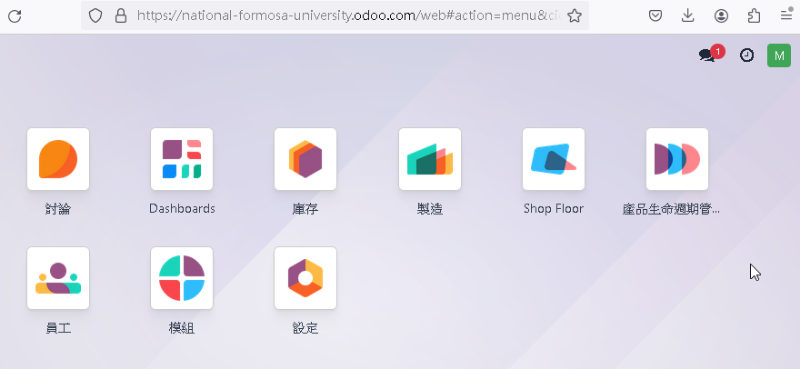

postgresql <<
Previous Next >> Homeworks
Topics
教育版帳號 microsoftonline 登入點: https://login.microsoftonline.com/
MS Team code: p0961sy (for @nfu users only)
下載可攜程式環境: portable_2024.7z (需要密碼, 下載 540MB, 解開壓縮後約 1.8GB)
First reading:
2021 ANALYSIS OF THE ODOO SOFTWARE CAPABILITIES REGARDING PRODUCT LIFECYCLE MANAGEMENT, MANUFACTURING EXECUTION SYSTEMS AND THEIR INTEGRATION.pdf or local download (password required)
This paper objectives revolve around analyzing the integration PLM and MES systems
from a theoretical perspective and comment on the use of the Odoo software tool to
implement said integration.
ERP - Entriprise Resource Planning
MES - Manufacturing Execution System
PLM - Product Lifecycle Management
Industry 4.0
https://www.odoo.com/
https://national-formosa-university.odoo.com (管理者為 50703199 At mde dot nfu dot tw)
如何在 Ubuntu 安裝 ODOO?
https://www.google.com/search?q=odoo+virautlbox+ubuntu
https://www.youtube.com/watch?v=94KyFyNPzh0

Y:\>tracert national-formosa-university.odoo.com
在上限 30 個躍點上
追蹤 national-formosa-university.odoo.com [104.155.209.1] 的路由:
1 <1 ms <1 ms <1 ms 140.130.17.254
2 <1 ms <1 ms <1 ms 192.168.105.254
3 <1 ms <1 ms <1 ms 192.168.102.252
4 <1 ms <1 ms <1 ms 203-69-229-65.hinet-ip.hinet.net [203.69.229.65]
5 <1 ms <1 ms <1 ms 168-95-229-182.tlhn-3302.hinet.net [168.95.229.182]
6 4 ms 4 ms 4 ms 220-128-19-46.chch-3032.hinet.net [220.128.19.46]
7 * * * 要求等候逾時。
8 4 ms 3 ms 3 ms 220-128-9-13.tyfo-3335.hinet.net [220.128.9.13]
9 4 ms 4 ms 4 ms 142.250.169.122
10 7 ms 7 ms 7 ms 1.209.155.104.bc.googleusercontent.com [104.155.209.1]
追蹤完成。
如何利用隨身碟、自建伺服器、 Replit、Codespaces 與 Gitpod 維護個人與分組的網站內容?
如何在自建伺服器(s.cycu.org/pj2022)中建立多用戶帳號?
https://md.tw/blog/2022_fall_cad2022_server%20_and_version.html
必須先刪除 2023 Fall 的用戶帳號後, 再根據 2024 Spring 的修課學員資料建立帳號.
如何在Replit 編寫網誌以及製作網際簡報? 相同流程是否可用於 Codespaces 與 Gitpod?
如何在 CoppeliaSim 環境中, 利用 IPv6 ZeroMQ Remote API Python 進行兩個自由度的鋼球平衡檯自動控制系統模擬?
postgresql <<
Previous Next >> Homeworks